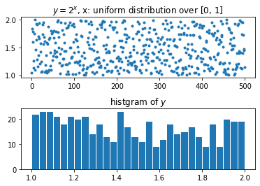
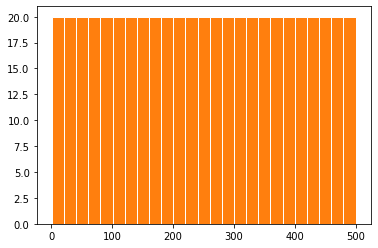
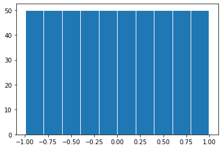
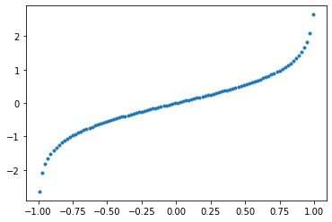
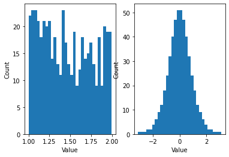

Math¶
import numpy as np
import matplotlib.pyplot as plt
1 专题¶
1.1 非正态分布数据转换成正态分布¶
e.g. 从均匀分布采样\(x\)，得到\(y=x^2\)，将非正态分布\(y\)转化为正太分布
# transform any distribution into Gaussian
n = 500
orig_data = 2**np.random.rand(n)
ax1 = plt.subplot(211)
ax1.plot(orig_data, '.')
ax1.set_title('$y=2^x$, x: uniform distribution over [0, 1]')
ax2 = plt.subplot(212)
ax2.set_title('histgram of $y$')
ax2.hist(orig_data, bins=30, edgecolor='w')
plt.subplots_adjust(hspace=0.5)
plt.show()

上图说明\(y\)不是正态分布，通过rankdata得到\(y\)中每个值的顺序号，并且计算这些序号的histgram。
>>> rankdata([0, 2, 3, 2])
array([1., 2.5, 4., 2.5])
# 因为有两个2，所以并列第二，2.5=(2+3)/2
# rank transform
from scipy.stats import rankdata
trans_data = rankdata(orig_data)
# the result of rankdata start from 1
bins_boundary = np.arange(np.min(trans_data), np.max(trans_data)+9, 10)
plt.hist(trans_data, bins=bins_boundary, edgecolor='w')
plt.hist(trans_data, bins=25, edgecolor='w')
plt.show()

上图25个bin的值相同（都是20个，500可以被25整除）,可以分别打印出排序后的前十个和后十个数据。
sorted_data = np.sort(trans_data)
print('top 10:', sorted_data[:10], '\nbtm 10:', sorted_data[-10:])
del sorted_data
top 10: [ 1. 2. 3. 4. 5. 6. 7. 8. 9. 10.]
btm 10: [491. 492. 493. 494. 495. 496. 497. 498. 499. 500.]
这也说明了，任一组大小为500的数据，只要包含相同值的个数和位置一样，通过此方法转化的正态分布是一样的。
例如A=[0, 0, 1, 2, 3]，B=[200, 100, 100, 300, 400]由于相同值的个数（分别为两个0和两个100）和位置（都是最小的）都一样，这两组数据转换完的分布是一样的。
下面将序号归一化到(-1, 1)之间，注意后面的arctanh输入范围为(-1, 1)，所以使用了一个小技巧，先加上一个比当前最大值大一（max+1）的数，再让所有的数除以这个数（归一化到(0-1)），最后再删除多出的的1。
# add a data point to the top
norm_data = np.append(trans_data, np.max(trans_data)+1)
norm_data = 2*(norm_data/np.max(norm_data))-1
norm_data = np.delete(norm_data, n)
plt.hist(norm_data, bins=10, edgecolor='w')
plt.show()

最后利用arctan函数的性质：“从0向周围发散（横坐标分辨率固定）”，将归一化的数据转成了正态分布的形式。
x = np.linspace(-0.99,0.99,100)
plt.plot(x, np.arctanh(x), '.')
del x

gaussian_data = np.arctanh(norm_data)
fig, ax = plt.subplots(1, 2)
ax[0].hist(orig_data, 30)
ax[0].set_xlabel('Value')
ax[0].set_ylabel('Count')
ax[1].hist(gaussian_data, 30)
ax[1].set_xlabel('Value')
ax[1].set_ylabel('Count')
plt.show()

2 函数¶
2.1 Exponential Function¶
\[f(x) = a^x\]
\[\text{exp}(x) = e^x\]
x = np.linspace(-5, 5, 100)
y = np.exp(x) # np.logspace
plt.plot(x, y, '.', markersize=1)
[<matplotlib.lines.Line2D at 0x7fc0afcc0e48>]
2.2 Hyperbolic Functions¶
https://www.mathsisfun.com/sets/function-hyperbolic.html
\[\tanh (x)=\frac{\sinh (x)}{\cosh (x)}=\frac{e^{x}-e^{-x}}{e^{x}+e^{-x}}\]
x = np.linspace(-10, 10, 100)
y = np.tanh(x)
plt.plot(x, y, '.', markersize=1)
plt.title('tanh(x)')
plt.legend(["-1<tanh(x)<1"])
<matplotlib.legend.Legend at 0x7fc0afc90710>
因为tanh的值域为\((-1, 1)\)，所以arctanh的定义域为\((-1, 1)\)
x = np.linspace(-0.99, 0.99, 100)
plt.plot(x, np.arctanh(x), '.', markersize=1)
plt.legend(["arctanh(x), -1<x<1"])
plt.title('arctanh(x)')
Text(0.5, 1.0, 'arctanh(x)')